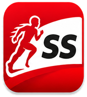

¿Qué es Sports Stats 21?
La plataforma definitiva con estadísticas de 15 deportes principales y más de 250 disciplinas adicionales. Desde fútbol y NBA hasta deportes regionales y emergentes. Datos históricos desde 1888 hasta hoy.
Los datos se actualizan ejecutando python update_data.py en la carpeta del proyecto.

SportsStats 21La red social de los deportes
Navega data, crea tu liga, arma tu perfil y conecta con jugadores de todo el mundo.
La plataforma definitiva con estadísticas de 15 deportes principales y más de 250 disciplinas adicionales. Desde fútbol y NBA hasta deportes regionales y emergentes. Datos históricos desde 1888 hasta hoy.
Sumérgete en NBA, NFL, MLB, NHL, F1, Champions League, La Liga, Premier y todas las grandes ligas del mundo. Tablas de posiciones, récords, leyendas, campeones históricos y data en vivo.
Inicia tu propia liga amateur con amigos del barrio o explora las ligas locales activas en tu zona. Sistema completo: equipos, calendarios, resultados y rankings personalizados.
Si reclutas para un club, academia o federación, accede a la base completa de jugadores en ligas locales, juveniles y escolares de todo el mundo. Filtros por edad, posición, país y nivel. Data al alcance de scouts profesionales.
Amateur, semi-pro o profesional — arma tu perfil deportivo con todas las ligas en las que has participado, estadísticas históricas, fotos y videos. Tu CV deportivo en un solo lugar, visible para reclutadores y clubes.
La esencia de Sports Stats: la red social del deporte. Conecta con jugadores, equipos y reclutadores de cualquier disciplina. Sigue a tus referentes, manda mensajes a clubes, encuentra compañeros para tu liga local y recibe invitaciones de scouts. Todo en un mismo lugar.
Cobertura diaria del mundo deportivo: análisis post-partido, fichajes, lesiones, históricos y opinión. Filtros por deporte, liga y equipo. Suscríbete para recibir un digest diario en tu mail.
Selecciona dos jugadores, dos equipos o dos ligas del mismo deporte y compara sus números lado a lado: títulos, goles, promedios, históricos, rachas. Ideal para debates: Messi vs Cristiano, Real Madrid vs Bayern, Premier vs La Liga.